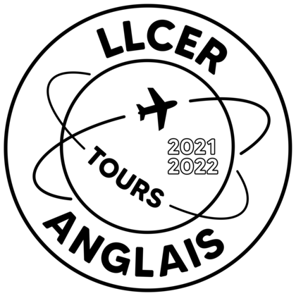
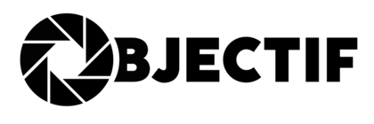
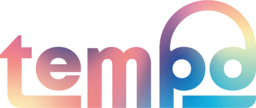
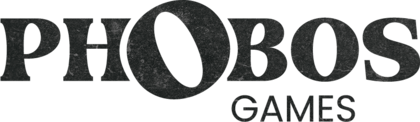

LLCER TOURS
Proposition [validée] d’un logo pour la Licence LLCER Anglais
de Tours 2021-2022. Projet professionnel. FEVRIER 2022 LOGICIELS : Illustrator |
OBJECTIF
Objectif, le magazine sur la culture et les conseils
photographiques. MARS 2022 LOGICIELS : Illustrator |
centrale iutPropositions de logos pour la Centrale Pédagogique des IUT. Projet professionnel. FEVRIER 2022 LOGICIELS : Illustrator |
LES SAISONNIERESLes Saisonnières, brasserie artisanale adaptant ses bières au goût des saisons. Projet universitaire. AVRIL 2022 LOGICIELS : Illustrator |
TempoTempo, l’agence de speed-dating basée sur les goûts musicaux. Projet universitaire. SEPTEMBRE 2022 LOGICIELS : Illustrator, Photoshop |
Musée infiniÉlaboration d’un logo pour un musée fictif sur le thème de l’infini. Projet universitaire. OCTOBRE 2022 LOGICIELS : Illustrator |
PHOBOS GAMESPhobos games, société fictive d’- escape games d’horreur. Projet uvniversitaire. NOVEMBRE 2022 LOGICIELS : Illustrator, Photoshop |